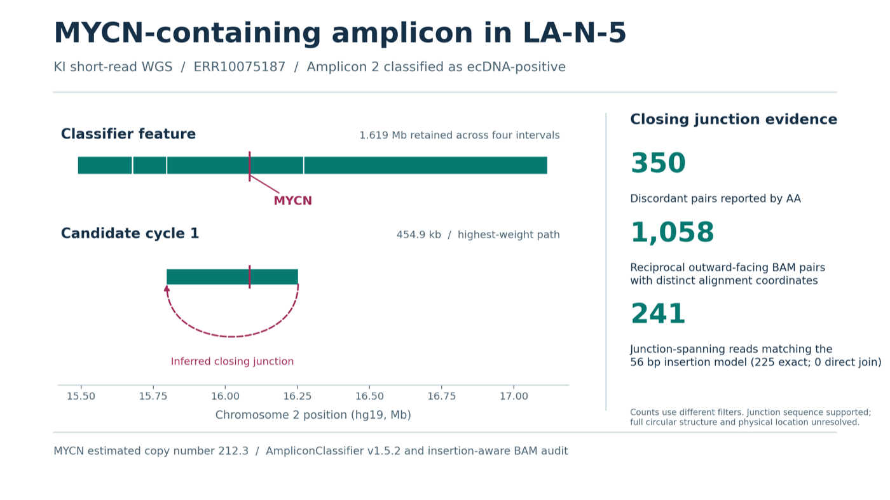

New · Cancer WGS / ecDNA
MYCN amplicon reconstruction in LA-N-5 neuroblastoma
Public short-read WGS (ENA ERR10075187, 383.6 M read pairs) run through my AmpliconSuite / nf-core/circdna workflow. AmpliconClassifier calls the MYCN-containing amplicon ecDNA-positive (MYCN copy number ≈ 212); the top 455 kb candidate cycle is closed by a junction supported by 241 reads matching a 56 bp insertion.
Computational prediction: physical circularity and location still need experimental confirmation (e.g. FISH).
Workflow code →